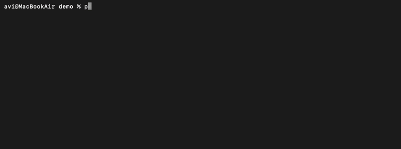

pwdNote
A lightweight CLI note-taking app for developers.
Latest CLI release: v0.3.1 for encrypted project notes, project-local notes, and Git-friendly encrypted notes stored alongside your code.
$ uv tool install pwdnote$ uv tool upgrade pwdnoteWith the above commands, you can install or update pwdnote.
What’s new in v0.3.1
- New key management commands.
- Export your encryption key for backups.
- Import your key on another trusted device.
- Show the current key path.
- Improved documentation.
$ pwdnote key path
$ pwdnote key export
$ cat pwdnote-key.backup | pwdnote key importDemo

What is a .pwdnote.enc file?
A .pwdnote.enc file is the encrypted project note file created by
pwdnote. It stores ciphertext, not readable plaintext, so it contains no human-readable
content on its own.
The pwdnote.enc file is designed to live next to your code. Because it
cannot be read without the local key, you can commit it to Git safely — these are
Git-friendly encrypted notes that travel with your repository.
To open or edit it, install pwdnote and run commands like:
$ pwdnote
$ pwdnote edit
$ pwdnote read
That is all you need to know about how to open a .pwdnote.enc file:
the pwdnote CLI handles decryption locally with your key.
Motivation
pwdnote started as a simple way to keep personal project notes close to my code, without worrying about accidentally committing plaintext secrets or overcomplicating the workflow.
Features
- CLI note-taking
- Encrypted by default
- Project-local notes
- Git-friendly
- Works from nested directories
- Lightweight
- Local-first
- Official VS Code integration
Example
$ pwdnote init
$ pwdnote edit
$ pwdnote
$ pwdnote add "Remember to rotate AWS credentials"Security
- Notes are encrypted on disk.
- Git stores ciphertext, not readable plaintext.
- The encryption key stays local.
- You can now export and import your key to securely move your encrypted notes between trusted devices.
Note: pwdnote is not a password manager. It keeps your project notes private, not your credentials.
Configuration
pwdnote supports:
- Lightweight TOML configuration.
- Custom initial note template.
- Editor override.
- Optional auto-gitignore behavior.
- Future key backends may be added.
VS Code extension
The official VS Code extension is now available. It provides:
- Open encrypted notes directly inside VS Code.
- Edit and save notes without leaving the editor.
- Uses the same encrypted
.pwdnote.encformat as the CLI.
All encryption and decryption continues to be handled by the pwdnote CLI for VS Code encrypted notes.
FAQ
-
Can I commit
.pwdnote.enc? Yes. It holds only ciphertext, so committing it to Git is safe. -
How do I open a
.pwdnote.encfile? Install pwdnote and runpwdnote,pwdnote edit, orpwdnote read. -
How do I update pwdnote?
$ uv tool upgrade pwdnote -
How do I move my notes to another computer?
-
Export your key.
$ pwdnote key export > pwdnote-key.backup - Copy the backup securely to your new trusted device.
-
Import it.
$ cat pwdnote-key.backup | pwdnote key import
-
Export your key.
- Is pwdnote a password manager? No. It keeps your project notes private, not your credentials.
-
Do I need both the CLI and the VS Code extension? Yes. The VS Code extension
is a graphical frontend for the pwdnote CLI. Install the CLI first with
uv tool install pwdnote, then install the official VS Code extension from the Marketplace. The extension automatically detects and uses the CLI.